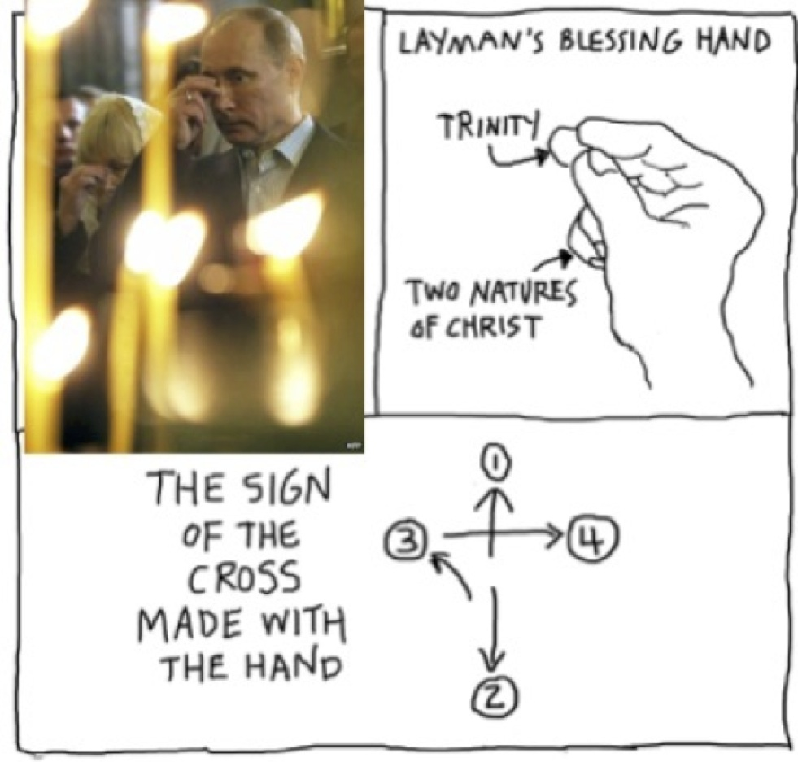

Ultimate repentence guide and statement of faith with music and tutorials
Part 1 The sign of The Cross

Start by staning facing east and to the sign of the cross.
After the sign of the cross get down on your knees and sing/listen to this
Lyrics: Open to Me the Gates of Repentance
Glory to the Father and to the Son and to the Holy Spirit
Open to me the gates of repentence, O giver of life
For my spirit goeth early, to the temple of Thy holiness
Coming in the temple of my body, wholly polluted
But beacuse thou art compassionate purify Thou me, by the the compassion, of Thy mercy
Both now and ever unto ages of ages.Amen.
Guide me in the paths of salvation, O Yahweh
For I have profaned myself with course sins, and consumed my whole life with procrastination
But by thine intercessions, purify thou me from all abominations
Have mercy on me, O Yahweh, according to thine loving kindness and according to the multitude of thy tender mercies
Blot out my transgressions
as a ponder in my wretcheness the many evil things I have done
I TREMBLE for the fearful day of judegement
But trusting in Thy meriful compassion like David do I cry out to Thee
Have mercy apoun me,O Yahweh, in thy great mercy
Say this prayer while still on your knees
Psalm 51 NKJV
Have mercy upon me, O God, according to thy lovingkindness:
according unto the multitude of thy tender mercies blot out my transgressions
Wash me throughly from mine iniquity, and cleanse me from my sin.
For I acknowledge my transgressions: and my sin is ever before me.
Against thee, thee only, have I sinned, and done this evil in thy sight: that thou mightest be justified when thou speakest, and be clear when thou judgest.
Behold, I was shapen in iniquity; and in sin did my mother conceive me.
Behold, thou desirest truth in the inward parts: and in the hidden part thou shalt make me to know wisdom.
Purge me with hyssop, and I shall be clean: wash me, and I shall be whiter than snow.
Make me to hear joy and gladness; that the bones which thou hast broken may rejoice.
Hide thy face from my sins, and blot out all mine iniquities.
Create in me a clean heart, O God; and renew a right spirit within me.
Cast me not away from thy presence; and take not thy holy spirit from me.
Restore unto me the joy of thy salvation; and uphold me with thy free spirit.
Then will I teach transgressors thy ways; and sinners shall be converted unto thee.
Deliver me from bloodguiltiness, O God, thou God of my salvation: and my tongue shall sing aloud of thy righteousness.
O Lord, open thou my lips; and my mouth shall shew forth thy praise.
For thou desirest not sacrifice; else would I give it: thou delightest not in burnt offering.
The sacrifices of God are a broken spirit: a broken and a contrite heart, O God, thou wilt not despise.
Do good in thy good pleasure unto Zion: build thou the walls of Jerusalem.
Then shalt thou be pleased with the sacrifices of righteousness, with burnt offering and whole burnt offering: then shall they offer bullocks upon thine altar.